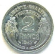
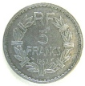
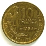
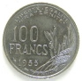

La IVe République (1946-1958) hérite d'une situation monétaire difficile après la Seconde Guerre mondiale. Les monnaies de la période reflètent la reconstruction et les ajustements successifs avant le retour à une plus grande stabilité sous la Ve République et le Nouveau Franc.
Les types et alliages évoluent. Cette période constitue le trait d'union entre les monnaies de la Libération et celles de la Ve République.
Sources : catalogues Le Franc & Gadoury
Les monnaies de la Quatrième République
'" loading="lazy" decoding="async" />
'" loading="lazy" decoding="async" />

Revers2 Francs MORLON
Date : 1947 ; 32.354.500 ex. (pour un total de fabrication de 334.751.730 ex. de 1944 à 1959)
Aluminium ; 27 mm ; 2.20g
Mise en circulation : 1945-1959
Avers : REPVBLIQVE FRANÇAISE ; buste drapé de la République aux cheveux courts à gauche, coiffée d'un bonnet phrygien orné d'une cocarde tricolore (centre guilloché, cercle lisse, cercle guilloché), sous une couronne composite de blé, chêne et olivier nouée par un ruban ; sous le ruban MORLON
Revers : LIBERTE - EGALITE / FRATERNITE ; 2 / FRANCS, en deux lignes au-dessus du millésime encadré des différents, le tout entre deux cornes d'abondance symétriquement opposées
Références : F.269 G.538b
'" loading="lazy" decoding="async" />
'" loading="lazy" decoding="async" />

Revers5 Francs LAVRILLIER
Date : 1949 ; 203.251.600 ex. (pour un total de fabrication de 802.536.521 ex. de 1945 à 1952)
Aluminium ; 31 mm ; 3.50g
Mise en circulation : 1945-1966
Avers : REPVBLIQVE FRANÇAISE ; tête laurée de la République aux cheveux longs à gauche ; au-dessous signé A. LAVRILLIER le long du listel
Revers : RF / 5 / FRANCS en trois lignes dans le champ au-dessus du millésime encadré des différents, le tout dans une couronne de laurier ornée de sept bagues
Références : F.339 G.766a
'" loading="lazy" decoding="async" />
'" loading="lazy" decoding="async" />

Revers10 Francs GUIRAUD
Date : 1951 ; 153.689.000 ex. (pour un total de fabrication de 638.231.200 ex. de 1950 à 1958)
Bronze-aluminium ; 20 mm ; 3g
Mise en circulation : 1950-1969
Avers : REPUBLIQUE FRANÇAISE ; tête de Marianne aux cheveux courts à gauche, couronnée d'une branche d'olivier portant fruit, ornée d'une cocarde tricolore (centre guilloché horizontalement, cercle ondulé, cercle guillochet verticalement) ; signé G. GUIRAUD derrière la tête, le long du listel.
Revers : LIBERTE EGALITE FRATERNITE ; 10 / FRANCS / (millésime entouré des différents) ; coq debout à droite au-dessus d'une branche de laurier à gauche.
Références : F.363 G.812
'" loading="lazy" decoding="async" />
'" loading="lazy" decoding="async" />

Revers100 Francs COCHET
Date : 1955 ; 136.584.872 ex. (pour un total de fabrication de 596.370.534 ex. de 1954 à 1958)
Bronze-aluminium ; 27 mm ; 8g
Mise en circulation : 1954-1966
Avers : REPUBLIQUE / FRANÇAISE ; buste de Marianne aux cheveux longs à droite, coiffée du bonnet phrygien timbrée d'une cocarde tricolore en pétales (centre guilloché en cercles concentriques, cercle de pétales lisses, cercle de pétales guillochés centrifuges), tenant un flambeau allumé dans le vent, signé RC en monogramme derrière la nuque.
Revers : LIBERTE . EGALITE / . FRATERNITE . en deux lignes, 100 FRANCS (millésime) en trois lignes, différents sous le millésime contre le listel ; bouquet de trois épis et deux branches d'olivier chargées de fruits à droite, signé R. COCHET au-dessous contre le listel.
Références : F.450 G.897